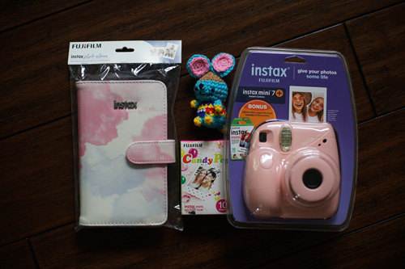
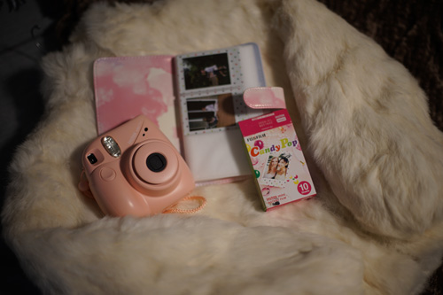
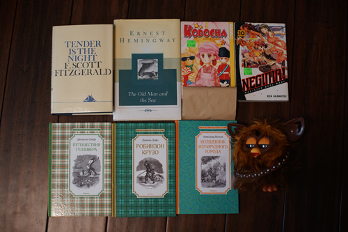

i met up with my very dear friend after not seeing her for something like a year and a half. we had so much fun talking about dolls and taste testing chocolate and we even exchanged some gifts! I finally was able to give her the doll clothes i made for her!
she presented me with an adorable pink instax mini 7+ camera!! i havent bought one because i am a very stingy person (if you couldnt tell) and the film is a big cost with these bad boys. she also got me an extra pack of film and a photobook for it! we went outside and forced ryan play photographer
I've only taken 3 exposures so far but it's so fun to watch the image appear and immediately have a print. lord knows it'll take me another year to sort and decide to print my actual camera photos. hopefully enough people will not know what to buy me and just grab me a pack of these for their [insert holiday] obligation gifts that i'll be able to keep using it without crying at the register too often.
she also gave me a beautiful rabbit fur coat and a amigurumi broccolo! She is so kind and thoughtful. I just hope my little goofy presents were good enough <3
Mixed goodwill and consignment shop finds:
Also Ryan's
Ryan's
i'll never find the rest of these but my imouto and i used to watch this show all the time.
Ryan's. I cannot provide any more information.
ryan bought him for me. he turns on but reboots shortly after waking and all of his motors are stuck. i'm really sad about it...